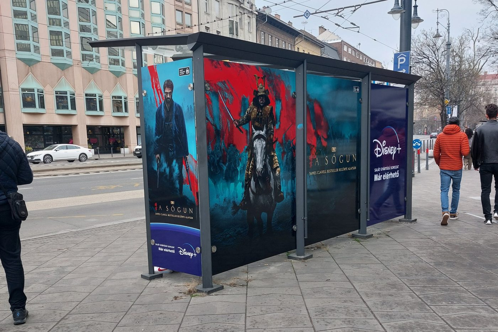
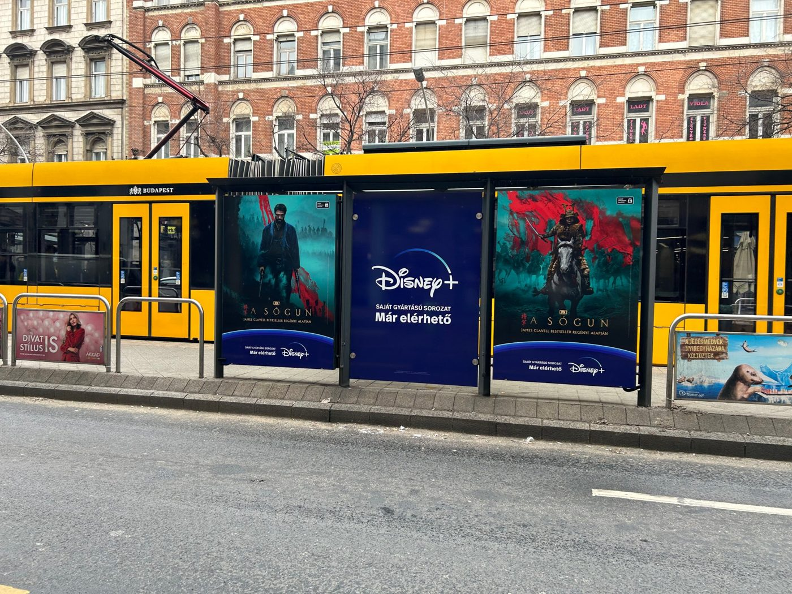
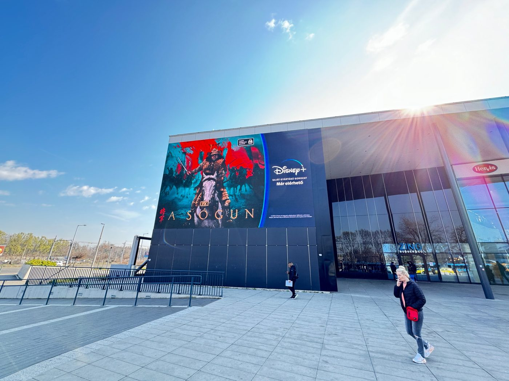
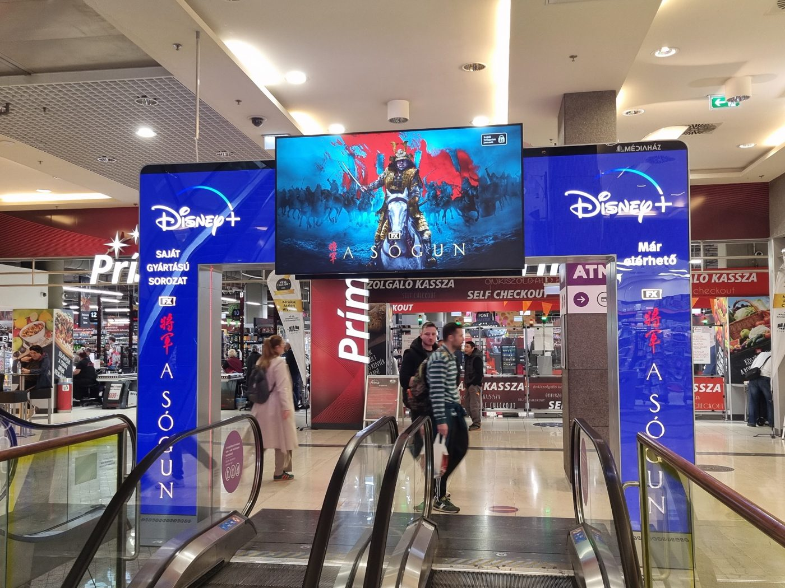
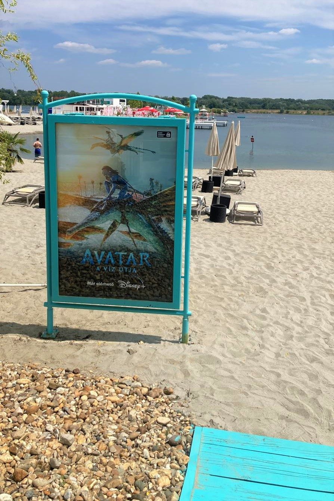
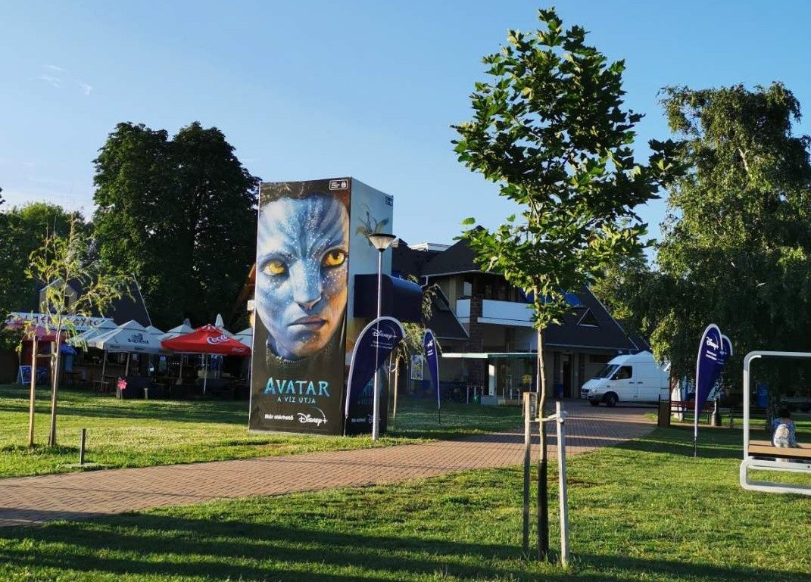
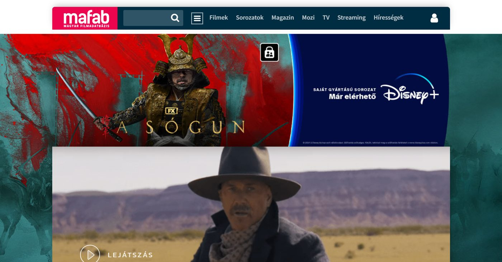
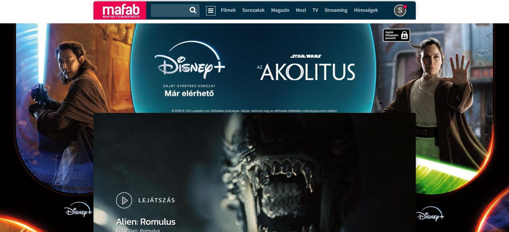
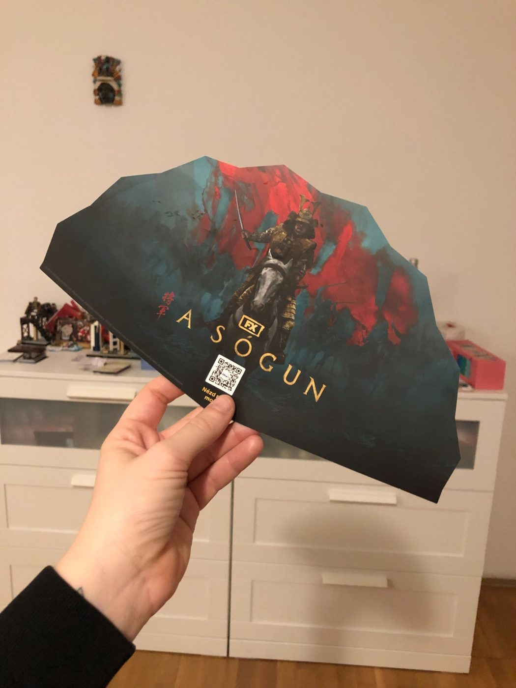

Case study
Planning Disney's media in Hungary
For two years I planned the media for Disney in Hungary, across Disney+, National Geographic and Disney Channel, with budgets of several million euros a year. Most of the work was title launches. A new series has a fixed release date, and everything has to go live on that day: TV, outdoor, radio, online and any partnership built around it.
The budget
I decided how the budget was split across channels and checked that it was spent the way we planned. I built and tracked the plans in Excel. I also handled invoicing with vendors and with Disney in SAP.
TV
I built the channel lists and the splits: which channels, which times of day, and how to combine them to reach the target audience. After a campaign aired, I checked GRP delivery in Kantar against the plan.
Outdoor
For Shōgun we fully wrapped bus shelters in Budapest, ran a large LED façade on a shopping centre, and put a digital gate over the entrance of a supermarket.




For Avatar: The Way of Water we put water-effect foil on top of bus shelters, so standing underneath felt like being underwater. In summer we took the campaign to the lakes, with posters on the beach, a large column in a lakeside park and mist machines along the shore. After outdoor campaigns we received survey reports on ad recall and brand recognition.


Online
Besides programmatic and social, we bought full homepage takeovers on mafab.hu, a Hungarian film database, for launches like Shōgun and Star Wars: The Acolyte. I set up the tracking tags in Google Campaign Manager and followed each placement's performance: impressions, clicks and viewability. Based on those results, I moved budget between placements and adjusted the splits while the campaign was running.


Radio
On radio we ran partnership formats on top of airtime. These were on-air games where listeners could win Disney prizes.
The food delivery partnership
For the Shōgun launch we built a partnership with a food delivery service. In the campaign window, deliveries went out in branded bags with a fan, each carrying a QR code that led straight to Disney+ sign-up. We also got Disney+ menus into specific restaurants on the platform and made video content around the idea of ordering in and watching the new series. The partnership worked well and was repeated for later launches.
